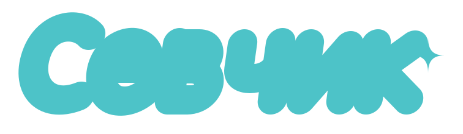
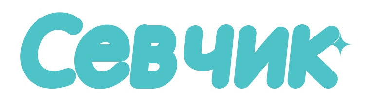
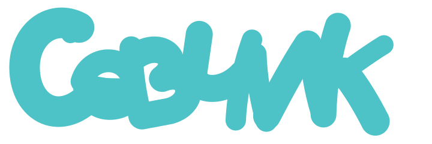

Вариант A — плотный
Максимальная масса и тесная посадка букв; самый «пластилиновый» вариант.

На беломИконкаНа тёмном
Вариант B — изящный
Больше воздуха внутри букв и спокойнее наклон, но сохранены мягкость и округлость.

На беломИконкаНа тёмном
Вариант C — динамичный
Выраженный наклон вправо и чуть более короткие формы создают ощущение движения.

На беломИконкаНа тёмном